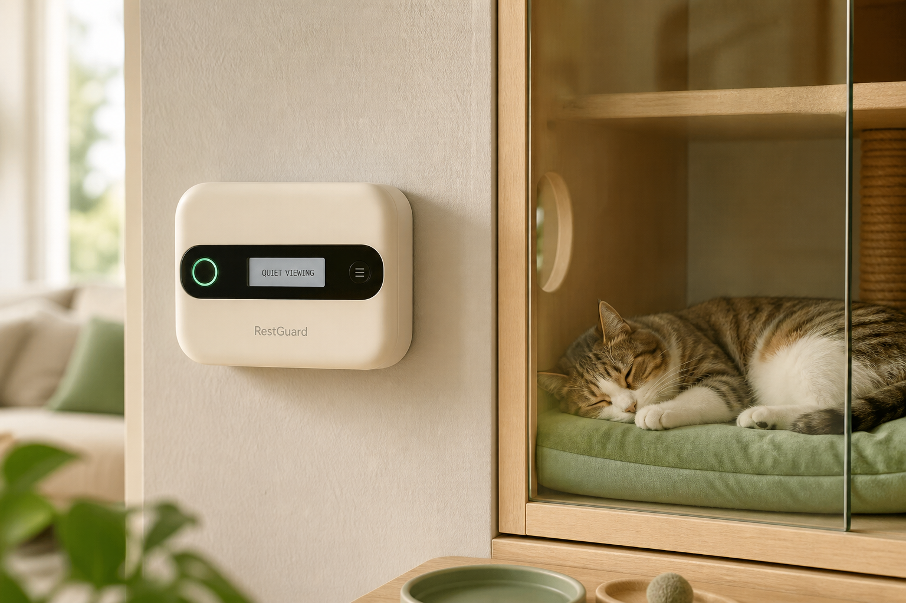
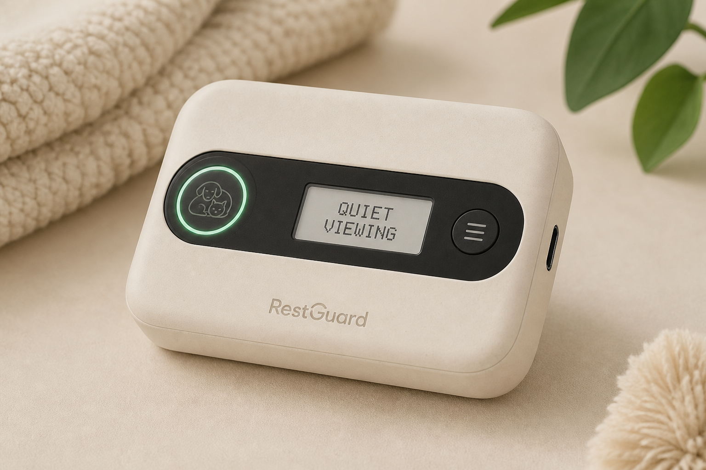
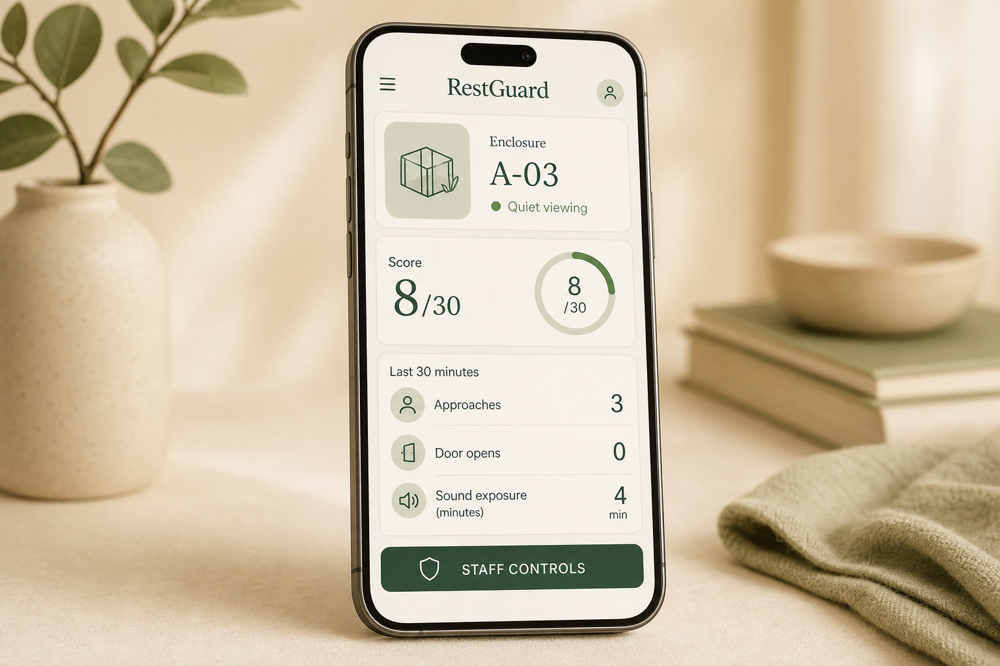

Presence
Approach + dwell
Time-of-flight watches the visitor zone. A walk-by is not an event. A pause is.
Engineering design portfolio · 2026
Make cumulative disturbance visible — without trying to “read” an animal’s emotions.

01 / The opportunity
A visitor approaches. Another opens the door. Conversation continues. Staff can see each moment, but the pattern that builds across a shift is hard to hold in one glance.
RestGuard sits outside the enclosure. It does not diagnose stress, store voices, or replace trained people. It turns three environmental events into a rolling score and a calm public state.
02 / Product concept
Time-of-flight watches the visitor zone. A walk-by is not an event. A pause is.
A MEMS microphone is treated as a level sensor. Only short RMS summaries are kept.
A reed switch counts handling. Magnet alignment is part of the install, not an afterthought.
Observe calmly. Colour is always paired with text.
Disturbance is accumulating in the last 30 minutes.
Rest period, or staff override. Do not assume “safe to touch.”
Not a diagnosis. RestGuard reports measurable events. Staff judgment always takes priority.
03 / The module
The first electronics object is a Tracer-like IMU-and-ranging board: ESP32-S3, VL53L1X, digital microphone, USB-C, RGB ring, reed header. Strap it for bench work, then hide the same thinking inside a cream 100 mm shell.


04 / Industrial design
Rounded 100 × 70 × 30 mm enclosure. USB-C power — no sealed battery in the first concept. External mount, no animal contact. Two-piece shell with a captive rear cover so the unit can be repaired.
Sage mounting plate, cream recycled ABS/PC, black sensor bezel, silicone gasket. The light ring is fast; the e-paper is slow and readable. Together they do not depend on colour vision alone.
05 / Who it is for
Predictable quiet. No wearable burden. Sensing stays outside the enclosure.
One colour, one sentence. Quiet viewing. Please give space. Rest period.
A local dashboard of counts, not recordings. Pause, reset, change thresholds.
06 / Staff interface
D = 2P + 3O + 0.25A over a rolling 30-minute window. Approaches need dwell. Hysteresis stops the ring from flickering. Authorized staff can start a rest period when judgment should beat the formula.
